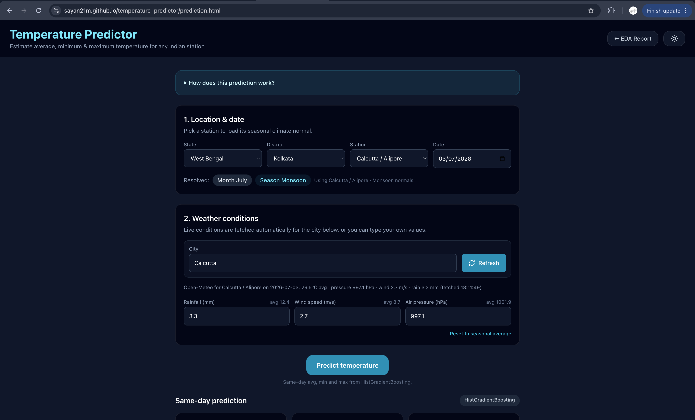
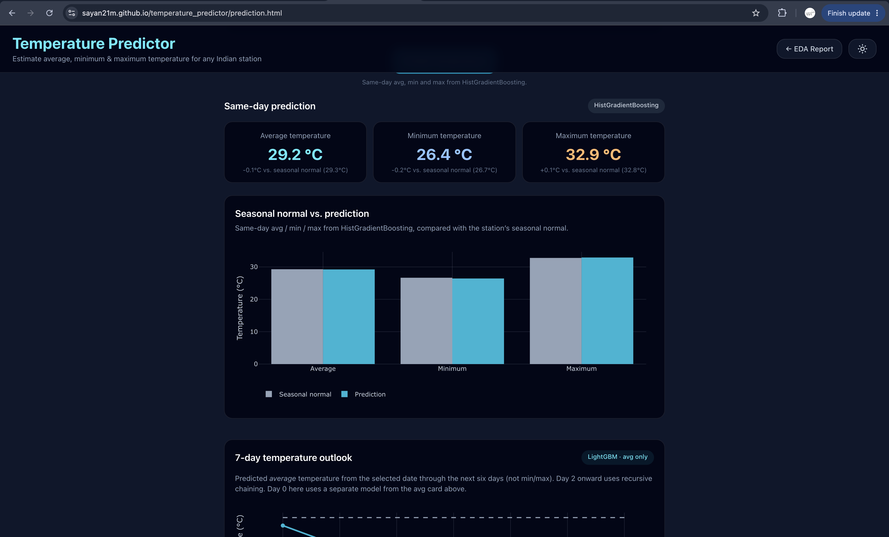
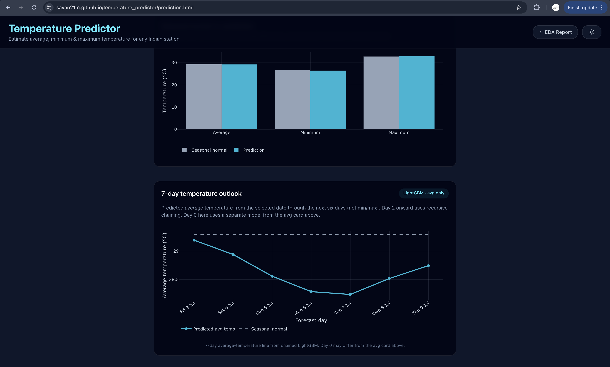

Temperature Predictor
Machine Learning Based Weather Prediction & Exploratory Data Analysis Dashboard
Project Overview
What it does. Temperature Predictor is a full-stack machine learning application that forecasts temperature from historical weather features and pairs the predictions with an interactive exploratory data analysis (EDA) dashboard.
Why it was built. Raw weather data is dense and hard to reason about without visualization. I wanted a project that combined the full ML lifecycle — data cleaning, feature engineering, model training, and deployment — with a real user-facing interface, rather than a notebook-only experiment.
Target users. Anyone curious about weather trends, students learning data science workflows, and reviewers evaluating my end-to-end engineering process.
Overall objective. Ship a lightweight, responsive, and self-contained tool that demonstrates practical machine learning applied to a real-world dataset, from ingestion to interactive dashboard.
Problem Statement
Weather data contains valuable patterns, but raw datasets are difficult to interpret without proper exploration and modeling. Temperature is influenced by multiple interacting variables — humidity, wind, pressure, and time — and a static table of numbers doesn't communicate those relationships.
The challenge was to build a practical tool that not only predicts temperature from weather features but also helps users understand the underlying data through interactive visualizations and statistical insights, all delivered through a simple web interface.
Solution
The solution is organized around a clear ML lifecycle. First, historical weather data is loaded and cleaned with Pandas — missing values are handled, types are normalized, and derived features are engineered from raw fields. A Scikit-learn regression model is then trained on the preprocessed dataset and evaluated for accuracy.
On top of the model sits a Flask backend that exposes prediction and chart endpoints. The frontend — plain HTML, CSS, and JavaScript — consumes those endpoints and renders interactive Plotly charts alongside the prediction form, producing a single cohesive web application.
Dataset
The project is built on a historical weather dataset containing measurements like temperature, humidity, wind, and pressure over time. It's imported into Pandas as the single source of truth for both the model and the EDA dashboard.
Historical Weather Data
Time-series weather observations imported into a Pandas DataFrame as the foundation for both modeling and exploration.
Data Preprocessing
Type normalization, deduplication, and consistency checks so downstream steps can rely on a clean, predictable schema.
Missing Value Handling
Rows with critical missing values are inspected and either imputed or dropped, depending on how important the field is to the prediction.
Feature Engineering
Time-based and derived features are constructed from raw columns to help the regression model capture underlying weather patterns.
Machine Learning Pipeline
Every step from raw data to dashboard is a distinct stage. Keeping them isolated made it easier to iterate on any single part without breaking the rest.
- 1 Dataset
- 2 Cleaning
- 3 EDA
- 4 Feature Engineering
- 5 Model Training
- 6 Prediction
- 7 Dashboard
Features
Data Preprocessing
Cleaning, normalization, and consistency checks on the raw weather dataset.
Missing Value Handling
Explicit handling of gaps in the dataset so the model trains on trustworthy inputs.
Temperature Prediction
Regression model built with Scikit-learn to predict temperature from weather features.
Interactive EDA
Explore the dataset visually with interactive Plotly charts baked into the dashboard.
Statistical Visualization
Distribution, correlation, and trend views to surface patterns in the data.
Forecast Generation
Predictions returned from the Flask backend, rendered into the dashboard in real time.
Technologies Used
Language & Frontend
Python (core), plus HTML, CSS, and JavaScript for the dashboard interface.
Machine Learning
Pandas and NumPy for data handling; Scikit-learn for training regression models.
Visualization
Plotly for interactive charts and Matplotlib for static exploratory views.
Backend & Tooling
Flask serves the prediction API; Git and GitHub handle version control and deployment.
Project Workflow
Data Collection
Gathered and imported a historical weather dataset for analysis.
EDA & Preprocessing
Explored distributions, handled missing values, and engineered predictive features.
Model Training
Trained and evaluated regression models with Scikit-learn.
Dashboard Development
Built interactive visualizations and a prediction interface with Flask + Plotly.
Deployment
Deployed the application via GitHub Pages for public access.
System Architecture
Frontend
HTML · CSS · JS
Plotly Charts
Flask Server
Routes · API
Request Handling
ML Pipeline
Scikit-learn
Prediction Engine
Data Layer
Pandas · NumPy · Weather Dataset
Challenges Faced
Missing Data
Deciding whether to impute or drop incomplete rows without biasing the model.
Feature Engineering
Picking derived features that actually improved prediction quality instead of adding noise.
Model Accuracy
Tuning the regression model and evaluating trade-offs between simplicity and error.
Dashboard Responsiveness
Keeping interactive Plotly charts smooth on smaller screens without sacrificing usability.
Lessons Learned
The biggest lesson was that model accuracy alone isn't the whole story — clear exploration and visualization matter just as much for a useful ML product. Building the dashboard forced me to think about how someone else would consume the model's output, not just how the model itself performed.
I also came out with much more hands-on experience across the full Python data science stack, and a clearer mental model for structuring a project end-to-end, from raw data all the way to a deployed web interface.
Future Improvements
- Multi-day forecasting with recurrent or ensemble models
- Explore stronger ML models and compare their accuracy
- Optimize the Flask API for faster response times
- Incorporate additional weather parameters into the feature set
Project Gallery



